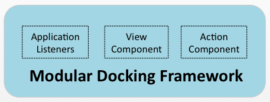

Because Snofyre uses a modular architecture, all its of functionality is broken down into
components. These components can be categoriesed into:
- Service Components
- User Interface Components
The user interface components respond dynamically to the service components to add
new panels or actions as might be appropriate. Traditional Desktop applications do not
have this dynamic behaviour. While we wont go into the philosophical debate of whether
modular desktop applications are better, it generally agreed that modular applications
are often better than large monolithic applications. However, in order to support such
dynamic behaviour, we need a dedicated framework that can handle the user interface
events in response to changes in the underlying service components. The
Modular
Docking Framework in Snofyre provides such functionality.
Figure 1. Modular Docking Framework
overview

Components
Since the
Modular Docking Framework needs to handle events relating to
panels and actions appearing and disappearing, it has a dedicated way of reprsenting
these notions.
- ViewComponent : Represents the notion of a panel or view in traditional
desktop application programming.
- ActionComponent : Represents the notion of an Action that can be
added to a Button or Menu in
traditional desktop application programmming.
- Application Listeners: Represent the notion of Listeners in
software. They propogate and handle the dynamic user interface behaviour in
Snofyre.
Each of these components are described in the following sections.